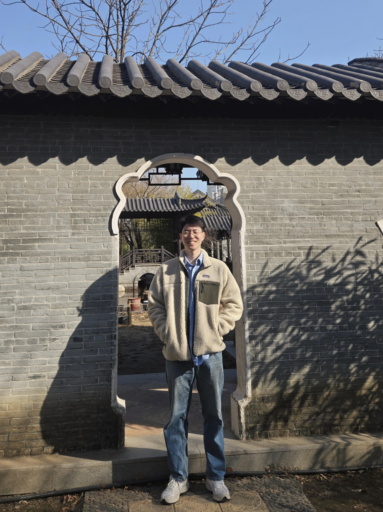

JISEOB YUN
Assistant Professor · Department of International Relations
Republic of Korea Airforce Academy
Welcome to my website. I am an Assistant Professor in the Department of International Relations at the Korea Air Force Academy and a Major in the Republic of Korea Air Force.
My research focuses on international security, arms control, arms transfer, and costly signalling theory.
I received my Ph.D. in Political Science from Seoul National University in 2025.
